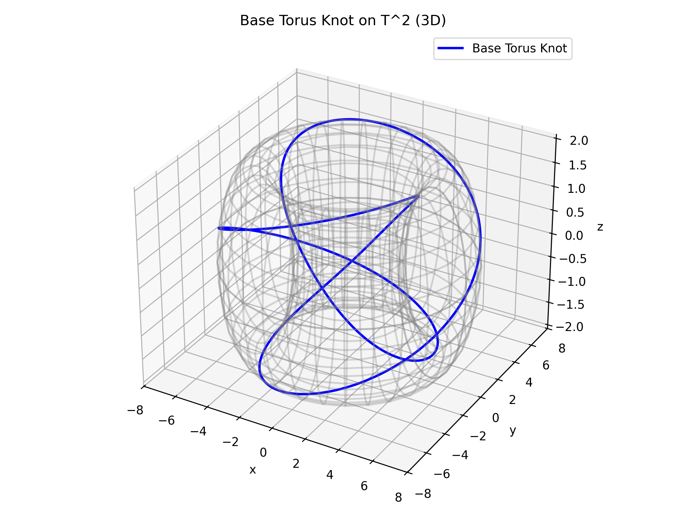
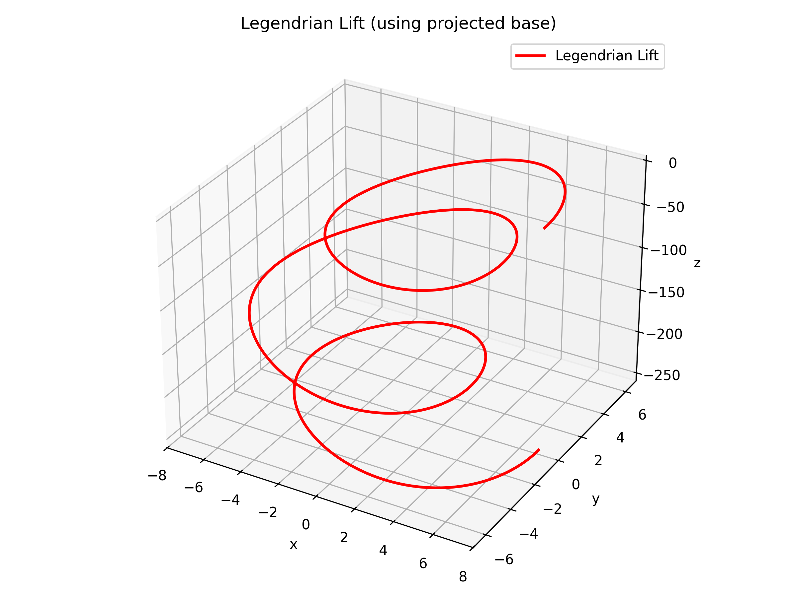
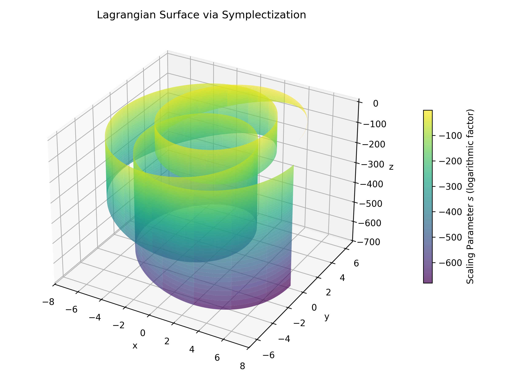

In this note, we explore a geometric framework for understanding brain dynamics by modeling brainwaves as the dynamics of two coupled oscillators. The state space is constructed as a torus \(T^2\) representing the oscillators' phases, augmented by an additional \(S^1\) factor that naturally arises from their intrinsic relative phase evolution, thereby capturing the phase delay between neural activity and awareness.
We model the brain as a system of two coupled oscillators. Each oscillator possesses a phase corresponding to a point on \(S^1\); together, they naturally form a torus:
$$ T^2 = S^1 \times S^1. $$
This simple picture allows us to represent the ongoing, periodic nature of neural activity. An essential addition to this model is an extra phase delay between neural activity (the oscillatory dynamics) and awareness (the higher-level integration or conscious experience). This delay is not simply imposed externally but emerges naturally from the system’s dynamics. It is represented by an additional \(S^1\) factor, yielding the complete state space
$$ T^2 \times S^1. $$
Here, the torus \(T^2\) encodes the basic oscillatory activity, while the extra \(S^1\) captures the temporal offset between activity and awareness. In this way, our model offers an intuitive geometric visualization of the interplay between neural signals and cognitive processing.

Figure: The base torus knot embedded in \(T^2\) (3D view). The wireframe torus provides additional geometric context.
In brain dynamics, the term “phase delay” refers to the time lag between the peak activities of neural oscillations in different brain regions—one area firing slightly later than another. Such a delay often indicates the direction of information flow within the brain network, with the delayed region receiving information from the earlier one. In practical settings, these delays are measured using techniques such as EEG or MEG recordings, where phase differences are analyzed across different frequency bands. In our framework, one can imagine an EEG recording as tracing out a torus knot in phase space, where the intertwined oscillatory dynamics and inherent phase delays naturally give rise to a knotted trajectory on \(T^2\). This perspective helps bridge abstract mathematics with observable biological phenomena.
It is important to note that this phase delay is not an arbitrary addition but a natural consequence of the intrinsic dynamics of the oscillators. Each oscillator evolves according to its own phase dynamics, typically modeled by equations of the form
$$ \dot{\theta}_i = \omega_i + F(\theta_1, \theta_2), \quad i=1,2, $$
where the function \(F\) captures the coupling between the oscillators. The resulting relative phase—which may include delays due to differences in natural frequencies or interaction effects—introduces an extra degree of freedom. Parameterized by an angle, this additional degree of freedom is naturally represented by the extra \(S^1\) factor in the state space. Thus, the phase delay is fundamentally tied to the oscillatory behavior of the system, providing a seamless link between the model and the underlying biological processes.
The trajectories on \(T^2\) (our torus knots) encapsulate the phase dynamics of the coupled oscillators. These curves often wind nontrivially around the torus, with their knot type specified by a pair of coprime integers \((p,q)\). This description is both visually appealing and mathematically rich, as it reflects the complexity of neural interactions.
To delve into the deeper geometric structure, we lift these trajectories into the cosphere bundle \(S^*T^2\). Recall that the torus is parallelizable, meaning that its tangent bundle is trivial; this fact allows us to identify the cosphere bundle with \(T^2 \times S^1\). In more geometric terms, the cosphere bundle consists of all points on the torus together with all possible unit covectors at each point—effectively, the collection of locations along with their corresponding unit momenta or directions in phase space. This interpretation provides a tangible picture of how the oscillatory information is not only localized but also oriented in a specific direction.
The cosphere bundle naturally carries a contact structure, which governs how curves interact with the ambient space in a tangential fashion. This structure is central to the study of dynamical systems and differential geometry, and it facilitates the transition from a purely positional description to one that includes directional information. Moreover, by symplectizing this contact manifold, we obtain the punctured cotangent bundle:
$$ T^*T^2 \setminus 0 \cong S^*T^2 \times \mathbb{R}^+. $$
This identification is pivotal; it shows that the punctured cotangent bundle arises by “adding a scale” (a radial or energy parameter) to the cosphere bundle, thereby enriching our geometric framework.

Figure: The Legendrian lift of the torus knot. This curve is obtained by integrating the prescribed derivative to satisfy the Legendrian condition.
When the torus knot trajectories are lifted to \(S^*T^2\), they become Legendrian knots—curves that are everywhere tangent to the contact planes. These Legendrian knots capture not only the positions of the oscillatory dynamics but also their directional (or momentum) information, encoding the asymptotic behavior of the system in a more refined way.
Reintroducing the radial (or temporal) direction via symplectization, the Legendrian knots project into the full punctured cotangent bundle as Lagrangian submanifolds. Recall that a Lagrangian submanifold \(L \subset T^*T^2\) is defined by the condition
$$ \omega|_L = 0, $$
where \(\omega = d\lambda\) is the canonical symplectic form derived from the Liouville one-form \(\lambda\). This condition ensures that the submanifold is as “flat” as possible with respect to the symplectic structure, meaning that it has no intrinsic symplectic curvature.

Figure: The Lagrangian surface obtained via symplectization. The robust nature of this structure supports the stability of coherent neural dynamics.
A particularly attractive feature of Lagrangian submanifolds is their stability under Hamiltonian perturbations. This dynamic stability implies that once a Lagrangian submanifold is formed, its essential geometric and topological properties persist even in the presence of small perturbations. In our model, this robustness translates into a reliable framework for capturing the coherence observed in neural oscillations. In simpler terms, the stability properties of Lagrangians help ensure that the coherent structures representing neural activity remain intact over time, even as the system experiences fluctuations or external influences.
Moreover, various invariants associated with Lagrangian submanifolds—such as those arising from Floer homology—provide powerful tools to characterize and distinguish these structures. These invariants allow us to rigorously track how different coherent modes interact and persist within the phase space, thereby offering a mathematical representation of the sustained and robust patterns of neural activity and the interplay between neural activity and awareness.
In summary, the projection of Legendrian knots into Lagrangian submanifolds not only completes the symplectization process but also yields a naturally robust model for coherence in the system. This stability provides a compelling geometric interpretation for the persistent and structured patterns observed in neural dynamics.
Our model can be summarized in the following steps:
Coupled Oscillators and the Torus: The phases of two coupled oscillators define a torus \(T^2\). An extra \(S^1\) factor, representing the phase delay between neural activity and awareness, yields the full state space \(T^2 \times S^1\). (This extra \(S^1\) naturally arises from the intrinsic phase evolution of the oscillators, capturing any inherent delays in their mutual interactions.)
Torus Knots: Brainwaves are envisioned as trajectories on \(T^2\) that form torus knots, encapsulating the complex phase relationships.
Lifting via Symplectization: The punctured cotangent bundle \(T^*T^2 \setminus 0\) is obtained as the symplectization of the cosphere bundle \(S^*T^2\). Lifting the torus knots to \(S^*T^2\) produces Legendrian knots.
Projection to Lagrangians: By reincorporating the additional temporal or phase-delay direction, these Legendrian knots project into \(T^*T^2 \setminus 0\) as Lagrangian submanifolds, which exhibit dynamic stability and robustness.
In this note, we have presented a toy model that employs the language of symplectic and contact topology to illustrate how differential geometry can be applied to biological systems. By modeling brainwaves as the dynamics of two coupled oscillators, we constructed a state space of the form \(T^2 \times S^1\) that naturally captures both the phase relationships and the inherent delays between neural activity and awareness.
Lifting torus knots to Legendrian knots in the cosphere bundle and projecting them into Lagrangian submanifolds via symplectization not only highlights elegant geometric structures but also provides a robust framework for understanding coherent patterns in neural dynamics.
Although our model is intentionally simplified, its aim is to serve as an accessible example of how abstract mathematical concepts can offer insight into complex biological phenomena. By gently introducing the reader to these ideas, we hope to showcase the fruitful interplay between differential geometry and the modeling of neural systems without overwhelming those who are new to these techniques.